This is my first blog post. Let’s see how it goes.
I’m currently working my way through Jeremy Howard and Rachel Thomas’s fast.ai course. It’s really fun and I can’t recommend it enough. Watch this video – it dispells a lot of the myths regarding deep learning.
My goals for this blog post are to:
Get used to blogging and “personal branding / marketing myself” without cringing into oblivion
Explain how I implemented and deployed an image classifier
Data Collection
Model Selection
Model Training
Model Deployment
Classifying Paintings
Now, for the cool stuff: I’ve trained and deployed an image classifier application. In theory, it’s supposed to accept a picture of a painting and predict what art period/movement it would belong to.
Here is a link to the app.
It’s pretty inaccurate now, I’ll get into why later.
Its fun to play around with though.
Here’s a painting I made. (Yes I know, I should quit everything and become an artist fulltime. What can I say, I am a true renaissance man )
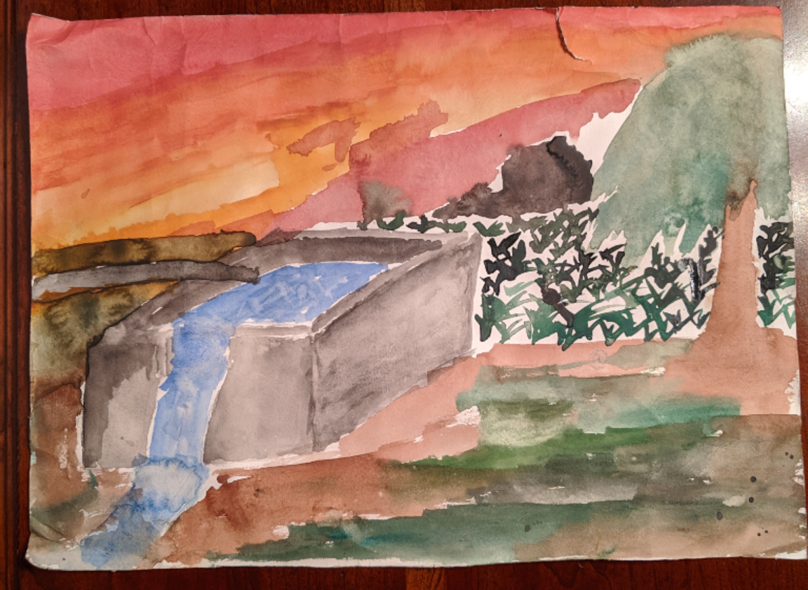
According to my application, I’m an expressionist. Apparently I present the world in my subjective view. Wow I’m so deep.
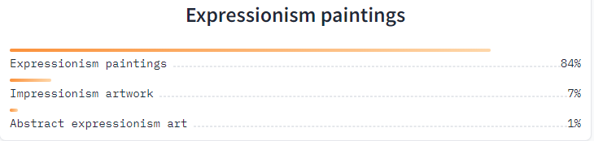
Data Collection
I knew that I wanted to classify art. First step, get the labeled data. I thought of two ways:
- Scrape search engines and get it manually. (I will be exploring this in my next version of this application. I’ll cover that in a future blog post)
- Find a ready made data set
It’s over 7,000 images of paintings. What’s really convenient, is the way in which it is organized. Each art movement/period has its own folder with all the associated images in those folders. This file organization is perfect for getting labels.
Now, there are a lot of issues with this data set as well. If you look at the link above and do just a cursory inspection of the images in each folder, you’ll notice a lot of repeated images. I suspect that this will cause some over training. Also, there are way too many categories. I’m no art history expert, but I suspect that there’s a lot of overlap with the movements/periods defined in the dataset.
I ignore all those problems and use the data set as is. This is a big reason why the end application isn’t that accurate.
It’s ok, I’m planning on making another version in the future.
Model Selection
The type of learning this model will be doing is called transfer learning.
Basically image classification is a popular task and many people and organization have already developed pretrained models for image classification. I’ll simply use one of those (specifically the resnet18 convolutional neural network) and just train it further on my specific data set to get the behavior that I want.
Model Training
Here, I’ll demonstrate some of the capabilities of some of the fastai api (it’s built on top of PyTorch).
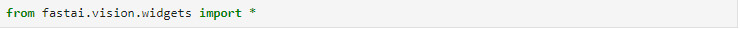
Along with creating this fantastic course that I’m doing, the fast.ai team have also developed this easy-to-use framework for working in deep learning.
First Let’s get the data ready for the model. In order to do that, we use fastai’s DataLoaders class. A DataBlock is a container/template for the DataLoaders.
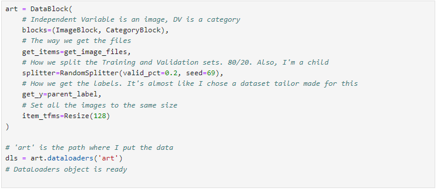
Here’s an example of 4 images in the validation set.
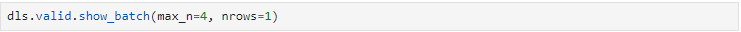
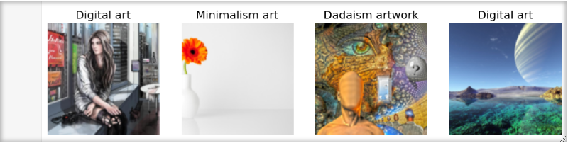
Now let’s give the model something the eat.
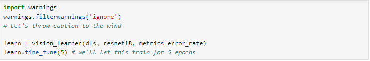
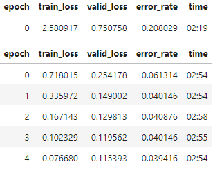
Side Note: I usually do this type of training/prototyping on GPU servers. But I was curious and decided to do it on an old abandoned desktop computer CPU at my house. It made a lot of interesting noises
I can live with a 4% error rate. Maybe just 4 epochs could have sufficed. There’s not a huge benefit the model gains between the 4th and 5th one.
Let’s look at the top validation image that the model had trouble predicting.
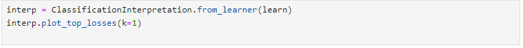
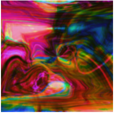
The model thought that the above image was contemporary art. It’s actually modernist.
… I’ll forgive the model on this one.
This is what I was mentioning before. There are a lot of categories that we’re dealing with that are very hard to discern between. Here’s a link to an explanation of the difference between modern and contemporary art. It seems like it’s just the time it was made.
So for future iterations of this project, I need to carefully pick categories. Do I pick the categories based on time period, or visual style? I may need an art historian to help me with that because intuitively, I don’t think that art movements/periods can be easily categorized like that.
In any case, now the model is trained, has new muscles, and is ready to show them off. To get it ready, let’s turn it into a pickle.

See, look how tuned I am with the zeitgeist. I’m hip. I’m cool guy.
Let’s export the model into a .pkl file.
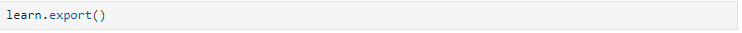
Model Deployment
I heavily referenced Tanishq Abraham’s blog post to deploy this model. Take a look at it.
Gradio is an easy way to demo machine learning models and HuggingFace Spaces are equaly easy to use places to host said models.
After following the blog post (link above), I was left with this app
Now I’m writing this blog post before I make the website that you are reading this on. By then, I may have already deployed it on this website itself. It may be under “Projects” or something. I’m using Quarto to build this websit by the way.
So that’s it
That’s my blog post. Honestly, it was a slog to get through, but that’s ok. I need to get used to writing these anyways.
If you have any comments, corrections, questions, concerns, advice, or you want to just troll me, please email me at kalyankumar@outlook.com.
Ok thanks bye.